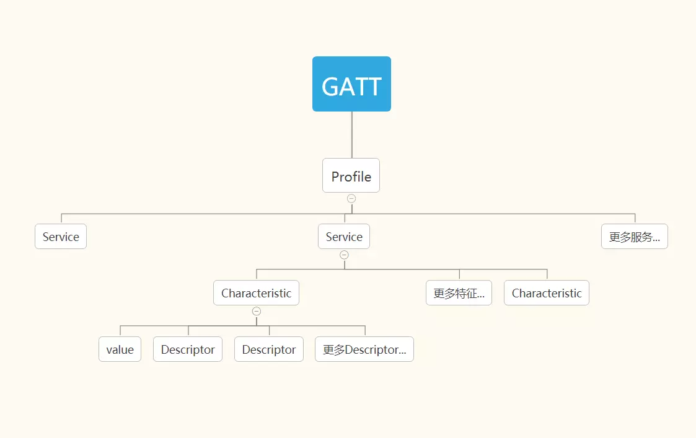
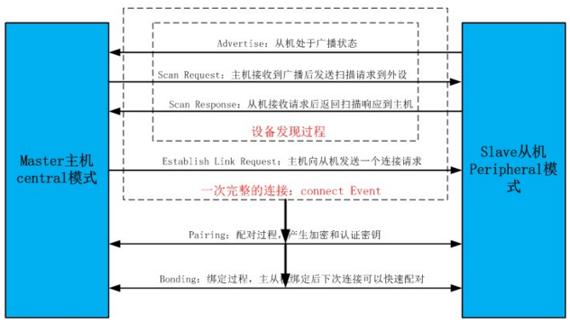
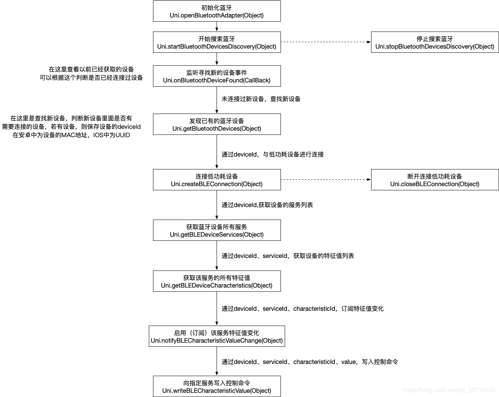

bluetooth
协议
蓝牙 4.0 协议
4.0 协议将传统蓝牙，低功耗蓝牙，高速蓝牙集中到一起，可以从三种模式中进行切换，从而提供更 广泛的应用空间。
蓝牙 4.1 协议
4.1 协议主要面向 IOT(Internet Of Things), 支持多设备互联
而且可以直接使用 IPv6 的通道，连接互联网，
profile

每个蓝牙设备包含一个 profile（配置文件），
profile 中包含一个或者多个service(服务）， service 可以理解为设备具有的一种能力，
例如，一个设备可能同时提供电量信息服务 BatteryService, 以及音量大小服务 VolumeService.
一个 service 包含一个或者多个characteristic(特征).
characteristic可以理解为服务的属性，一个characteristic包括一个 value(array of bytes)，
以及多个可选的descriptor.
descriptor包含一个 value（array of bytes），用来描述或者配置它的characteristic.
特征是与外界交互的最小单位。 蓝牙设备硬件厂商通常都会提供他们的设备里面各个服务(service)和特征(characteristics)的功能， 比如哪些是用来交互(读写)，哪些可获取模块信息(只读)等。 比如说，一台蓝牙 4.0 设备，用特征 A 来描述自己的出厂信息，用特征 B 来与收发数据等。
主机和从机通过characteristic来进行通信。
每个service和characteristics都由一个UUID来标识。
GATT(Generic ATTributes) 通用属性协议
SIG 定义了一些标准的通用属性配置文件 .
例如，电池信息和血压测量，都有相应的定义。
以血压Blood Pressure Profile为例, TODO
连接过程

1, 建立中心角色—
2,扫描外设（discover）（通过接收从设备广播来扫描、发现设备，获得 peripheral ID）—
- a, 如果数据中已经和某些蓝牙设备绑定，可以使用 BluetoothAdapter.getBondedDevices();方法获得已经绑定的蓝牙设备列表。通过指定特定的 peripheral 的 UUID,central 只会 discover 这个特定的设备。
- b, 搜索周围的蓝牙设备受用 BluetoothAdapter.startDiscovery()方法
- c, 搜索到的蓝牙设备都是通过广播返回，需要注册广播接收器来获得已经搜索到的蓝牙设备
3,连接外设(connect)（根据 peripheral ID 连接指定的外设）—
4,扫描外设中的服务和特征(discover)（一个设备里的服务和特征往往比较多，一般会在发现服务和特征的回调里通过 service、characteristic UUID 去匹配我们关心那些）—
5, 与外设做数据交互(explore and interact)—
6, 断开连接(disconnect)。
平台支持情况
web
web 跟 bluetooth 相关的 api 仍处于 draft 状态。即使是 chrome 也仅支持有限的 api.
出于 web 安全性和开放性的考虑，web bluetooth 不支持跨连接的持久性，即断开设备连接后必须重新配对（？）
原生 TODO
ios 通过coreBluetooth提供相应的 api
android
小程序
微信将原生的蓝牙能力暴露给小程序，可以使用相关的 api。 只支持 BLE 蓝牙设备,不支持经典蓝牙.
例如,蓝牙耳机一般属于经典蓝牙, 小程序的蓝牙能力搜索不到.
flutter
有相关的插件，但是特性支持不够完整。
硬件情况
可穿戴设备,以及其他测量设备,一般都是低功耗蓝牙设备,需要 central 设备支持蓝牙 4.0 以上.
有些蓝牙设备除了可以直接连接, 也有自己的硬件平台,例如小米手环.
demos
血压仪设备具体过程

存在的问题
- 如何知道设备测量血压的 serviceId? 每种血压仪的 serviceId 是否一致?
- 如何知道特征 characteristicid?
- 如何解析获取的特征值? 其数据结构是否对各个血压仪一致?
- 一次传输只能传输 20 个 byte, 对于内置存储的血压设备如何获取所有的数据?
其他相关
SIG
蓝牙技术联盟(Bluetooth Special Interest Group, Bluetooth SIG)是一个以制定蓝牙规范，以推动蓝牙技术为宗旨的跨国组织。它拥有蓝牙的商标，负责认证制造厂商，授权他们使用蓝牙技术与蓝牙标志，但是它本身不负责蓝牙装置的设计、生产及贩售。
小米 app 如何和手环配对
实质上仍然是使用蓝牙来配对. 通过对信号强度的计算, 可以判断手环和中心设备(手机)的大致距离, 当相当近时, app 再和手环进行配对.